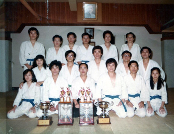
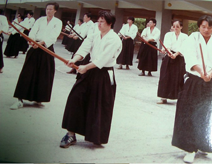
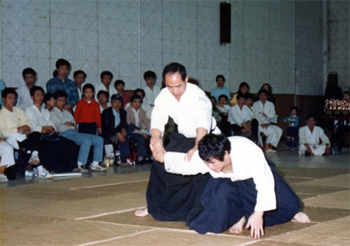
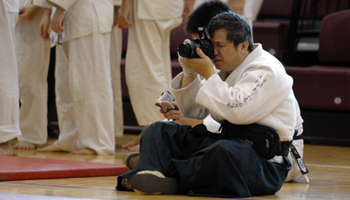
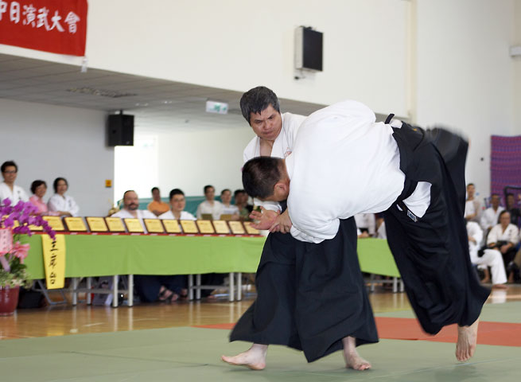
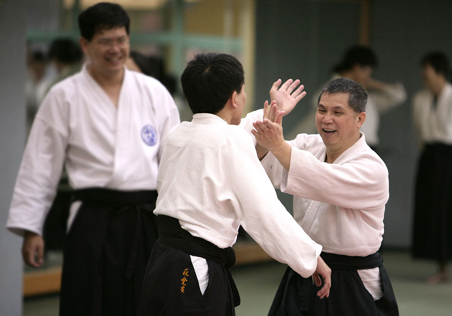

陳昌平老師生平簡介






民國41年
出生於苗栗三灣，父親務農，母親是家庭主婦。家中排行第二，他有一位姊姊，一位弟弟及三位妹妹。
平時喜愛彈吉他、吹口琴，無師自通。有家庭後，工作閒暇時喜歡在家裡看好萊塢電影、閱讀線上小說。也因為認真的個性，經常在合氣道辦活動時幫忙照相、美工設計。
於竹南高中畢業後當兵三年，退伍後在家郷當學徒學廣告設計，學成後在台中與人合夥開店，然而維持不久便關門大吉，於是獨自到台北謀職，進入第一家廣告設計公司工作－「力山有限公司」。
工作之餘，陳老師報名參加救國團英文班，在此結識李君亮先生等眾好友。包括陳老師在內的四個好朋友，經常利用週末假期結伴出遊，或露營、或登山、或夜遊談心等，情誼相當深厚。時逢李君亮先生推廣合氣道，陳老師等人情義相挺，在李君亮先生帶領之下加入合氣道。
民國69年
加入台北市合氣道委員會第一期學員，陳老師開始在雙連國小涼州街場地開始學習合氣道，啟蒙教師為王琇娟女士。李君亮先生當時擔任王琇娟女士的助教，在陳老師學習合氣道的進程中維持亦師亦友的關係。
民國71年
中華民國合氣道協會延吉街道館成立，陳老師為自強班第八期學員，在延吉街總部道館跟著李清楠、王武雄等師範學習。
民國72年
廣告設計大賞得獎，赴日本領獎。
民國73年
晉升初段，在同年結婚，隔年大女兒誕生，再三年小兒子誕生。
民國75年
離開力山廣告公司，再度創業，此次獨資開店更為艱難，幾年後選擇結束營業，進入第二家公司－「帝格有限公司」。
陳老師婚前居住在台北市六張犁，婚後與師母於台北市八德路置產，民國79年進入帝格有限公司後便移居至新北市新莊，此後便久居新莊，直至離世。
民國83年
脫離協會，加入中華民國合氣道推廣訓練協進會。下班後經常至新莊道館練習，並且擔任客席教練。也在這一年離職，進入第三間公司－「安桀有限公司」。
民國85年
晉升五段。
民國86年
師大合氣道社正式創社，因朋友引薦進入師大擔任教練。
民國88年
入選技術委員會並成為國家級裁判。
民國90年
進入第四間公司－「世昕有限公司」。
民國91年
應台大社團之邀擔任台大椰林合氣道社教練。
民國92年
晉升六段。
民國100年
6月4日因病過世，享年60歲。
陳老師即使工作忙碌，於師大及台大的指導工作從不懈怠，若非不得已從不請假。除平日例行的練習外，寒暑假的加強練習，陳老師亦經常親臨教學，對學生猶如自己孩子般懇切耐心地指導、教誨。
資料編輯：林秀治
備註：取材來源為口述整理，如有不正確之陳述或補充不足處，敬請與我們聯繫修正，謝謝！